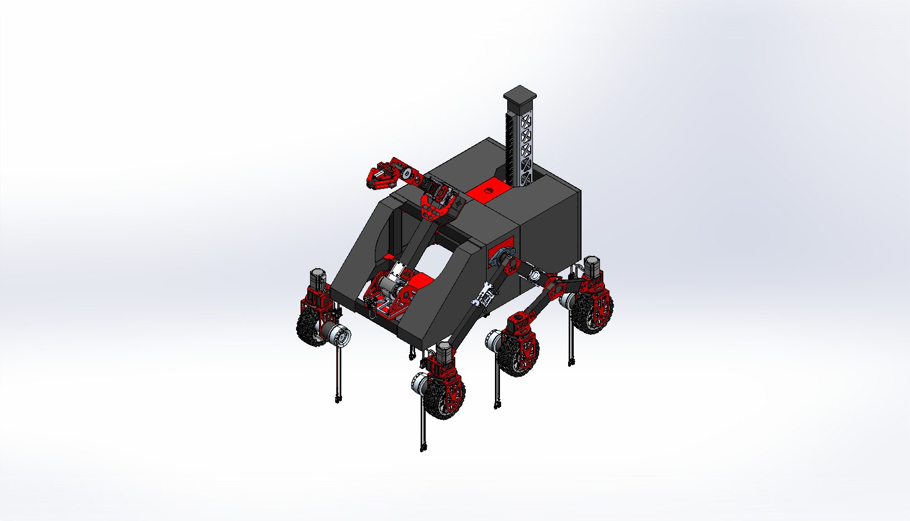

← All work / Project 06
Harvard Biorobotics · CAD
HURC Rover
CAD for a mobile rover and the turntable interface that lets its arm rotate.

01 / The contribution
A mount that lets the arm move with confidence.
I worked on the HURC rover CAD assembly, focusing on how the bevel-gear turntable plate mounts to the rover so the arm can rotate. The plate had to connect cleanly to the structure, keep the intended motion, and leave room for the mechanisms around it, so the work meant thinking across the whole assembly.
This is the design work I enjoy most: small interfaces that quietly decide whether a bigger system works.
02 / Design lens
Every moving mechanism starts with a good interface.
Mounting, alignment, access and load paths are where the mechanism meets the machine. I treat them as part of the design from the first sketch.